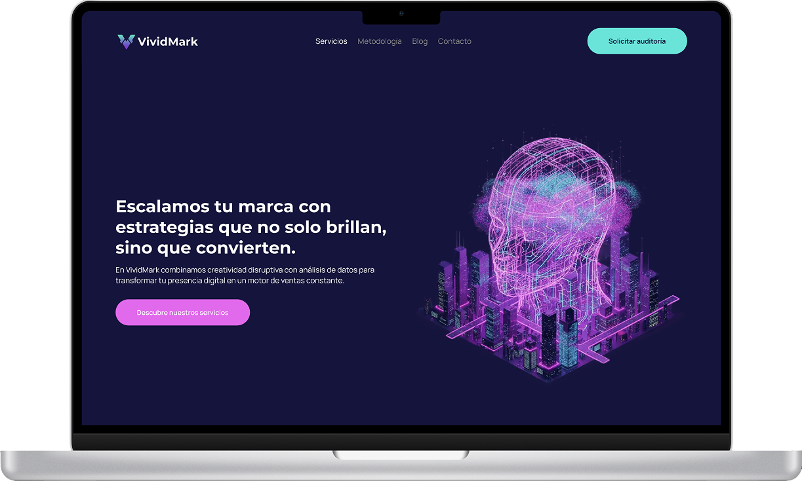
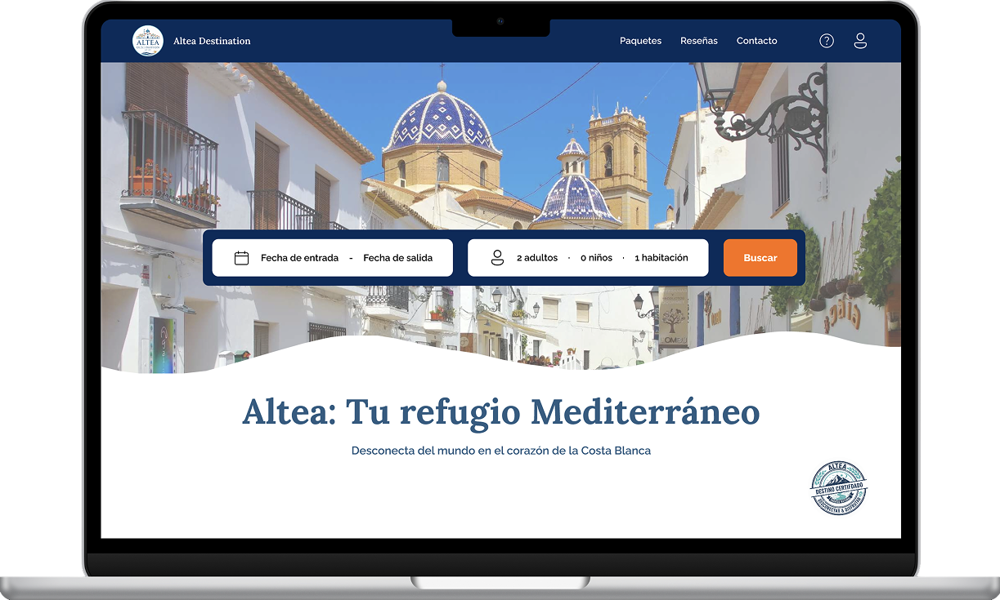

Diseñadora UX/UI
Alba Mulero Otón
Diseño interfaces con foco en investigación de usuarios y sistemas no solo con pantallas bonitas. Actualmente trabajo en SIGEL.
SIGEL
Proyecto en desarrollo


Rol: Diseño UX/UI end-to-end
SIGEL necesitaba una web corporativa que comiunicara dos cosas a la vez: que son una empresa de tecnologia seria (ciberseguridad, desarrolo, cloud) y que su misión social formar y emplear talento es igual de real.
Proyecto en curso estas capturas corresponden a la dirección de diseño actual aun sin lanzar.
Café artesanal
Proyecto realRol:Diseño UX/UI. Marca digital
Negocio familiar en Guatemala que trabaja directamnete con pequeños productores de café. El reto era trasaladar ese origen artesanal y humani a una web sin caer en clichés mostrar el proceso real, de la cosecha a la taza, con fotografias y ritmo propios.
Diseñé la arquitectura completa: presentación de la marca, catalogo de cafés, y una sección de proceso en cuatro pasos que cuenta el recorrido del grano.

VividMark
Proyecto personal
Rol:Diseño UX/UI. Exploración de estilo
Proyecto por iniciativa propia para salir del registro corporativo y explorar un lenguaje visual más arriesgado: fondo oscuro, acentos de neón, tipografia con más carácter pensado para una agencia de marketing y crecimiento digital.
El objectivo era demostrarme (y demostrar) que puedo sostener un sistema visual comletamente distinto al que suelo usar, sin perder la claridad ni jerarquia.
Altea Destination
Proyecto personalRol:Diseño UX/UI. Exploración de estilo
Concepto de web de reseervas para escapadas en la Costa Blana. Otro ejercicio por libre, esta vez en el contesto extremo opuesto a VividMark: cálido, mediterráneo, pensado para transmitir calma y confianza antes de reservar.
Trabajé la selección de paquetes, el sistema de reseñas y un buscador de fechas simpple, pensado para que la decisión de reservar se sienta ligera.

Diseño desde la investigación, no desde la suposición.
Soy diseñadora UX/UI con formación especializada en investigación de usuarios, diseño de interfaces y prototipado. Tengo background en desarrollo de Front-End, lo que me facilitas colaborar directamente con equipos técnicos y cuidar el traspaso de diseño a código.
Actualmente trabajo en SIGEL, diseñando productos web y mobile, y antes pase por desarrollo Front-End en Aunna IT una combinación que me ayuda a diseñar pensando también en cómo se construye.
Herramientas
Tecnología
03 - Contacto
¿Hablamos?
Abierta a nuevas oportunidades y colaboraciones. Escríbeme o revisa mi perfil.